For IDEO's AI Variety Show, I built a visual system by hand, then scaled it in OpenStudio, where automation multiplied it into looping videos, graphics, and screen-printed merch. A system built to multiply without losing its point of view. Watch it here.
Love
A system of love.
Type & Emotion
Motion poster from a design workshop I led at SAIC, where the students and I animate frame-by-frame loops based on a song. This is my example from the instructions: a loop based on “Anger Is An Acid” by cEvin Key with IAMX.
Love
Type and love in motion.
The Birth of the Pill on WGN
My artwork for TimeLine Theatre’s The Birth of the Pill made it onto WGN Morning News, alongside playwright Jessica Huang and author Jonathan Eig. Seeing them discussing the story in front of an image I created based on their work was a wonderfully surreal full-circle moment.
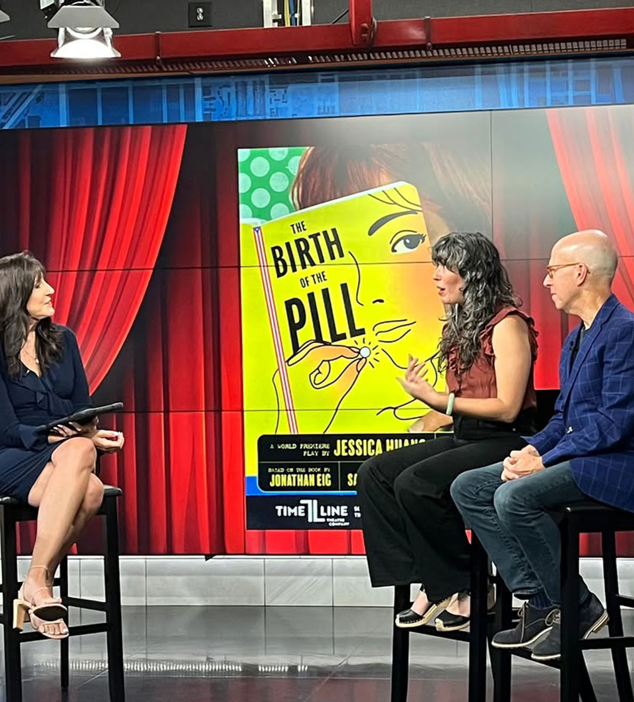
Love
Full-circle love.
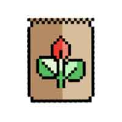
3 Movements – Typeforce 14 Exhibit
Digital animation and typeographic design for the Typeforce 14 Exhibit at Co-Prosperity Sphere in Chicago. A series of animations drawing from the sonic languages of Max Richter, Mica Levi, and Philip Glass. Each of the three animations presents a different interpretation oftime based on each composer. Created with input by AI to map a particular composition to the movement in the posters, and re-edited by hand.
Love
Love like music.
Le Bal
Poster and promotional imagery for Le Bal at Trap Door Theatre. I tried to make the graphics look intoxicated, with hand-drawn typography inspired by Pierre Bonnard, but with Whiskey instead of Champagne influences. See all the posters so far here.
Neo Nightclub has been the staple of Chicago’s alternative music scene since 1979. I took photos of patrons which were used for promotional posters, and serve as a time-capsule catalog of the visitors. In collaboration with Johnny Mei, with styling by the models. See more here.
A photoshoot for Trap Door Theatre’s production of Witkacy's The Cuttlefish. An absolute dream to work on my favorite playwright’s poster. See all the posters so far here.
Excited to receive a Pedagogy Start-Up Grant from the School of the Art Institute of Chicago where I'm teaching the Type and Image in Motion class. Together with my students, we explored how AI, animation software, and typography can work together to create moving type posters. The example here was created with Runway AI, Illustrator and AfterEffects.
Love
Type and love in motion.
Green Corridors
Poster design for Green Corridors at Trap Door Theatre. Created with construction paper and colored pencils. See all the posters so far here.
Very proud to have The Chicago Design Archive recognize Trap Door Theatre's production poster designs as part of their permanent collection. The archive is a collection of historically important design as well as a living, growing record of the vibrant Chicago design scene from the 1920s onward. The posters I designed from the past shows of Vatzlav and Dinner with Marx were selected.
Photoshoot with long-time collaborator Joannie Wu, founder of SoFly Social in Austin. Celebrating over a decade of collaboration!
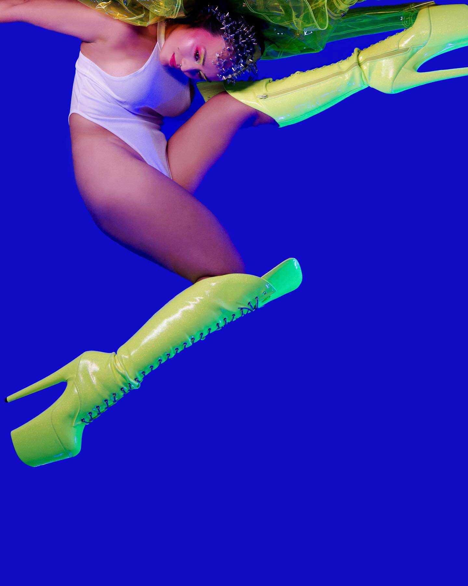
Love
Electric Love.
Underscore Podcast
An interview with Chicago Graphic Designers club on the Underscore Podcast. Host Christian Solorzano chats with me as we explore craft, theory, and practice of graphic design, plus discuss ideas that cultivate a more inclusive and thoughtful creative community.
In a recent interview with the Brecht Society, I talk about designing show posters for Trap Door Theatre. We cover everything from channeling existential dread (but making it alluring), to creating posters that perform. Grateful to author and co-editor Anthony Squiers for the dialogue. Read the full interview here.
Always a great feeling to see a poster I worked on out in the world. The design for Debate utilized a simple layout with historical photos and bold typography. It was an absolute honor to work on a play about my literary hero, James Baldwin.
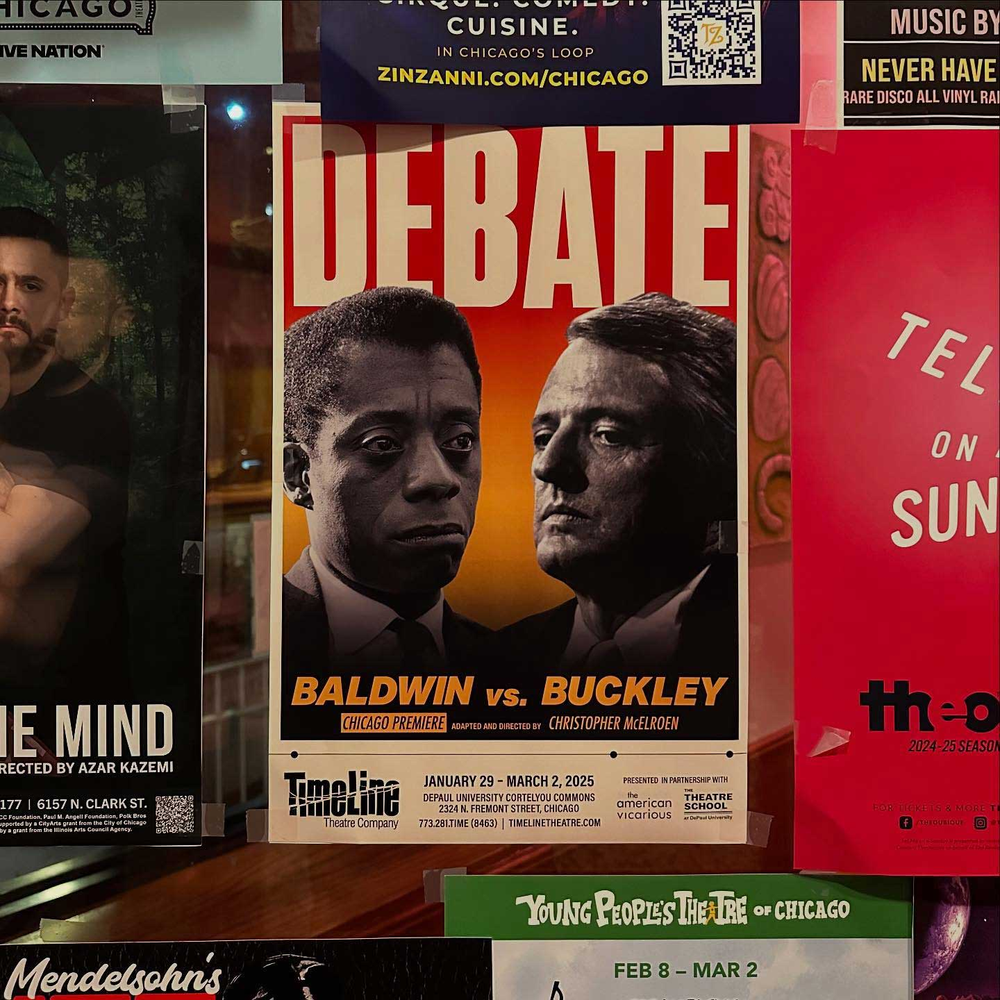
Love
Love is a growing up.
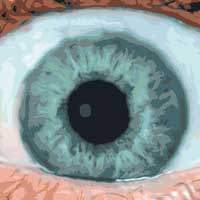
God Said: I Need a Cigarette
A film that based on a human dream rendered completely with machines. Training material for magical realism, and longing for algorithms.
Love
Do electric sheep dream of love?
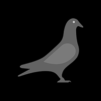
Budget Pigeon
✨My latest side project, Budget Pigeon, a Personal Budgeting Horoscope 🐦✨Read about the process in this article.
An experimental animation example to showcase 3D animation.
Love
Stop the presses for love.
The Lehaman Brothers
Look mom, I’m on Broadway! Well.. Broadway in Chicago. Illustration and type design for The Lehman Brothers for TimeLine Theatre.
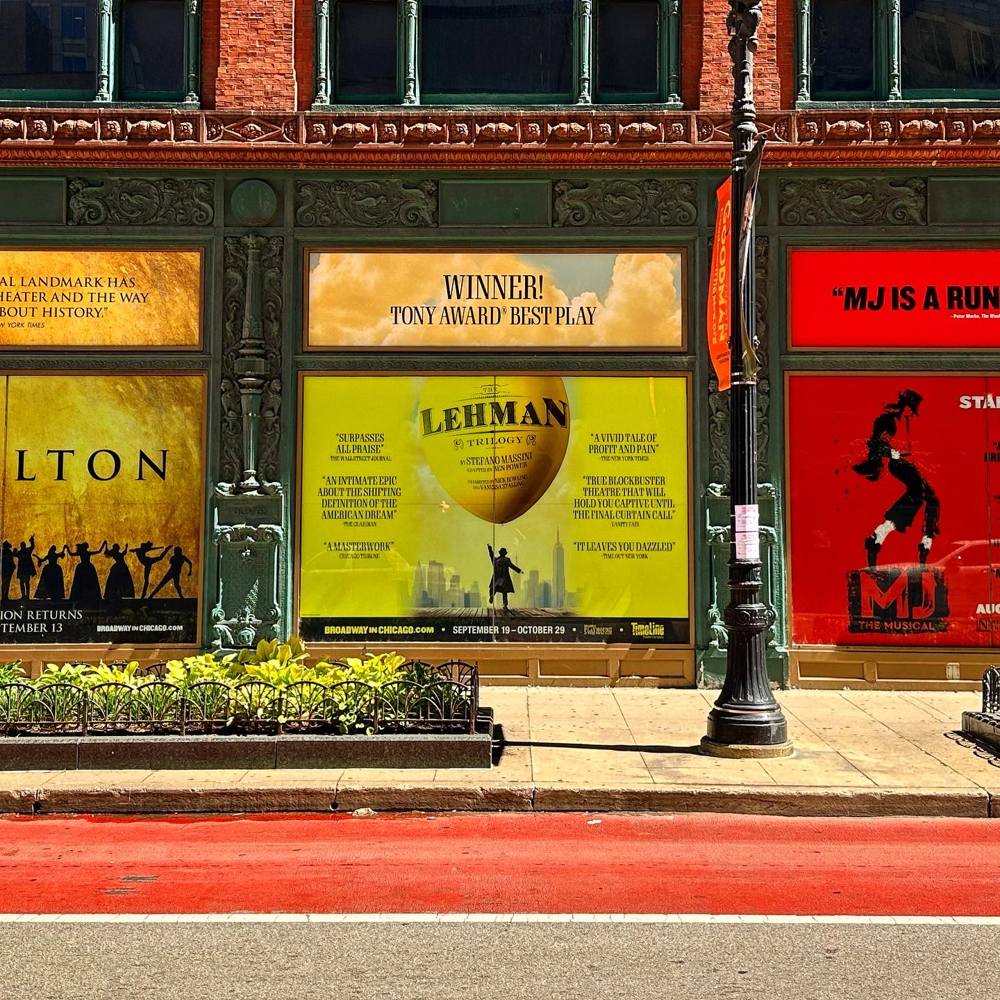
Love
Love on Broadway.
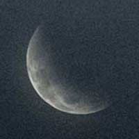
Kin
A brief science fiction movie centered on a message transmitted into the cosmos underscores the significance of hearing one's own voice. Created amidst the pandemic, the actor Keith Surney delivered his lines over a video call. The movie debuted at the SF Queer Film Festival.
Love
Love in kinship.
TRAP DOOR THEATRE
Illustration for the Dinner with Marx at Trap Door Theatre.
Love
Love is delicious.
Lockheed Vega
My illustration of a red Lockheed Vega, similar to the one flown by Amelia Earhart across the US in 1932. One of my favorite historic machines.
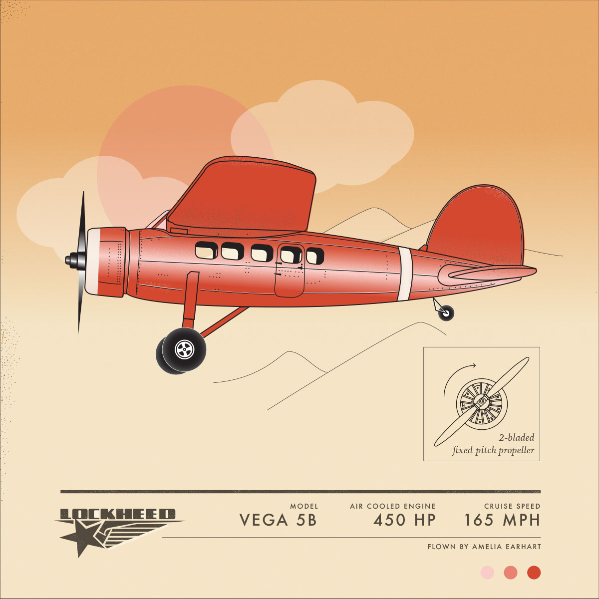
Love
Love up in the sky.
Trap Door Theatre
Poster for Galileo at Trap Door Theatre. The central figure is both propellig and pulling the others as a celestial body. See all the posters here.
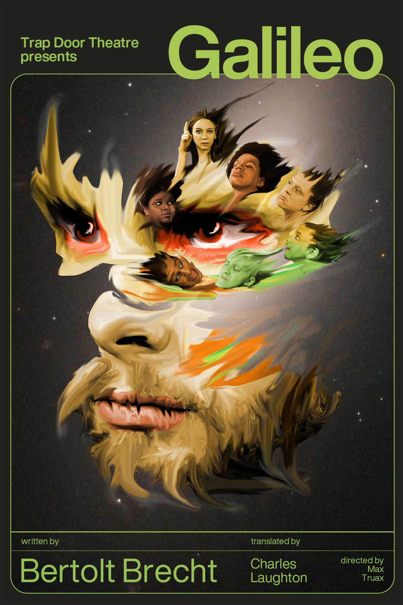
Love
And yet it moves.
Neuromancer
A showcase of masking in AfterEffects with the added flair of quotes from William Gibson’s Neuromancer.
Love
Time moves in one direction, memory another.
Trap Door Theatre
Poster for Lipstick Lobotomy at Trap Door Theatre. 1950s dreams turned to nightmares. See more posters here.
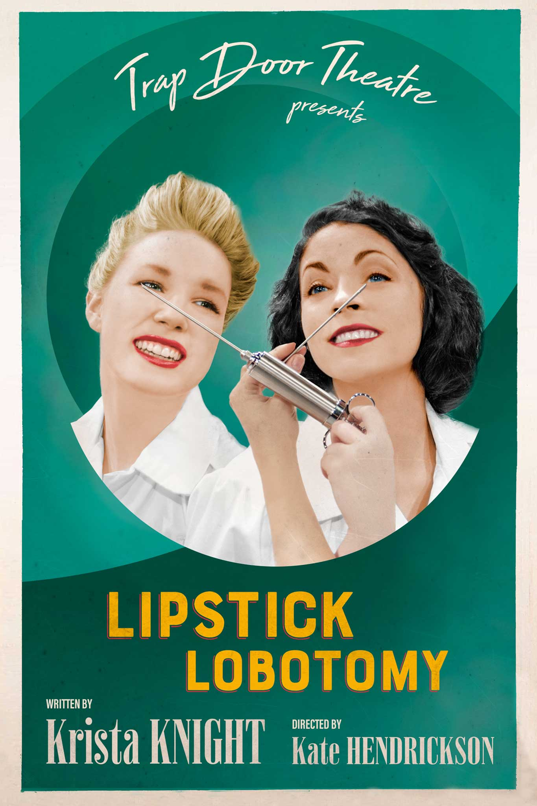
Love
Lipstick Love.
Advanced Typography
A type class assignment that never happened: The Infolyric, translating emotion into information and formatting it as a record cover. Maybe next year?
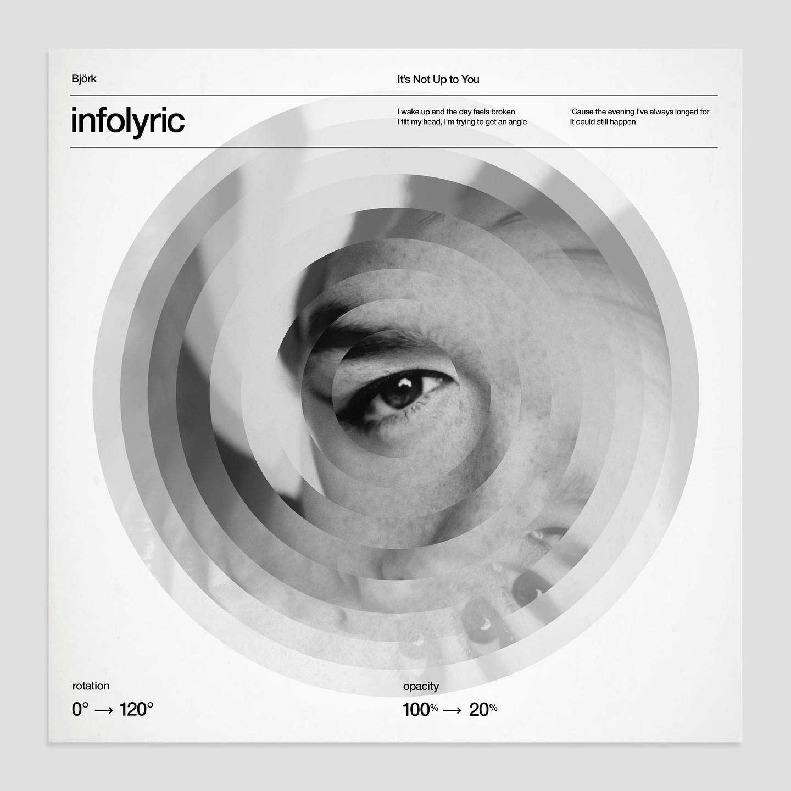
Love
All is full of love.
Trap Door Theatre
Alternate design for the excellent virtual play Discourse Without Grammar by Matei Visniec at Trap Door Theatre. Out of several versions, the red was my favorite.
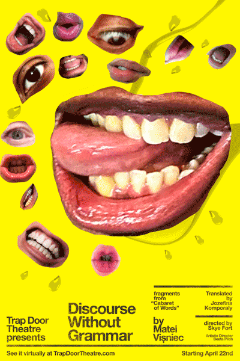
Love
Love is delicious.
Guest Post
Дизайн - бомба. Я словила эстетический дзен
Love
Спасибо тебе друг!
Motion Graphics
As a class, we investigated the origins of sounds in letters, and brought their expressions back to how we imagined they were originally drawn: as pictograms representing the sound and look of a particular animal.
Love
Snakes need love too.
TRAP DOOR THEATRE
Alternate poster design and photography for They by Witkacy at Trap Door Theatre. Even though a different direction was chosen, this is still one of my favorites I've ever designed, and seeing the play was a transformative experience. See more posters here.
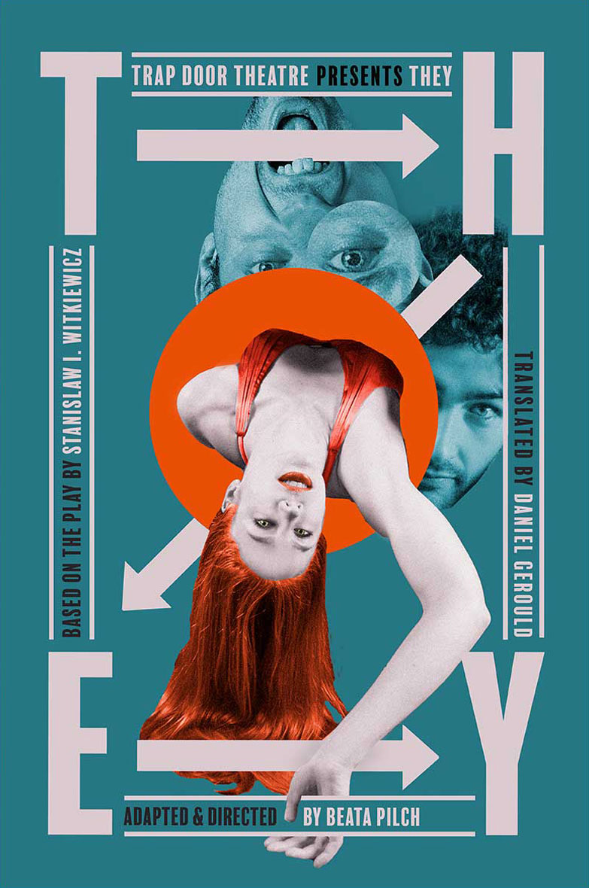
Love
Metaphysical Angst of Love
Guest Post
“The truth is out there, but so are lies.” — Agent Dana Scully
Love
I want to believe
LAGBAC
I worked with the LAGBAC lawyers association to create a new identity and brand expression to be more inclusive of all LGBTQ+ people. While leveraging the brand equity of their name, we added a new tagline and description, and connected the organization to the Chicago flag.
Love
Equitable Love.
Dimensional Typography
Dimensional type made of rope and flowers as inspiration for an assignment for the Type 4 class at UIC. This design is inspired by the Sagmeister & Walsh book Beauty.
Remote learning is a challenge, but digital design is specifically well tailored to collaboration utilizing the web. Click the image for examples of student work and approaches to the assignments over the past couple years.
Film title lettering created with Alexander Skoirchet, who drew custom letterforms for both the sans-serif and script type. We sent it to Stefan Sagmeister, who graciously reviewed it on his Instagram.
Love
Love Lettering!
Guess Again
Latest in class tutorial: neumorphism with drop shadows and gradients — type that looks soft enough to poke.
Love
I'm guessing it's love.
Buy/Sell
Thinking about that GameStop stock short squeeze 🤑
Love
Don’t short Love
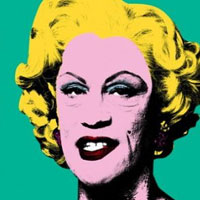
The Malkovich Sessions
A book by the iconic Chicago photographer Sandro showcasing his portrait work with John Malkovich. I worked on the design with Greg Samata and Sandro, a wonderful way to see the process of legends in their respective fields. The book is available at local bookstores and via Amazon.
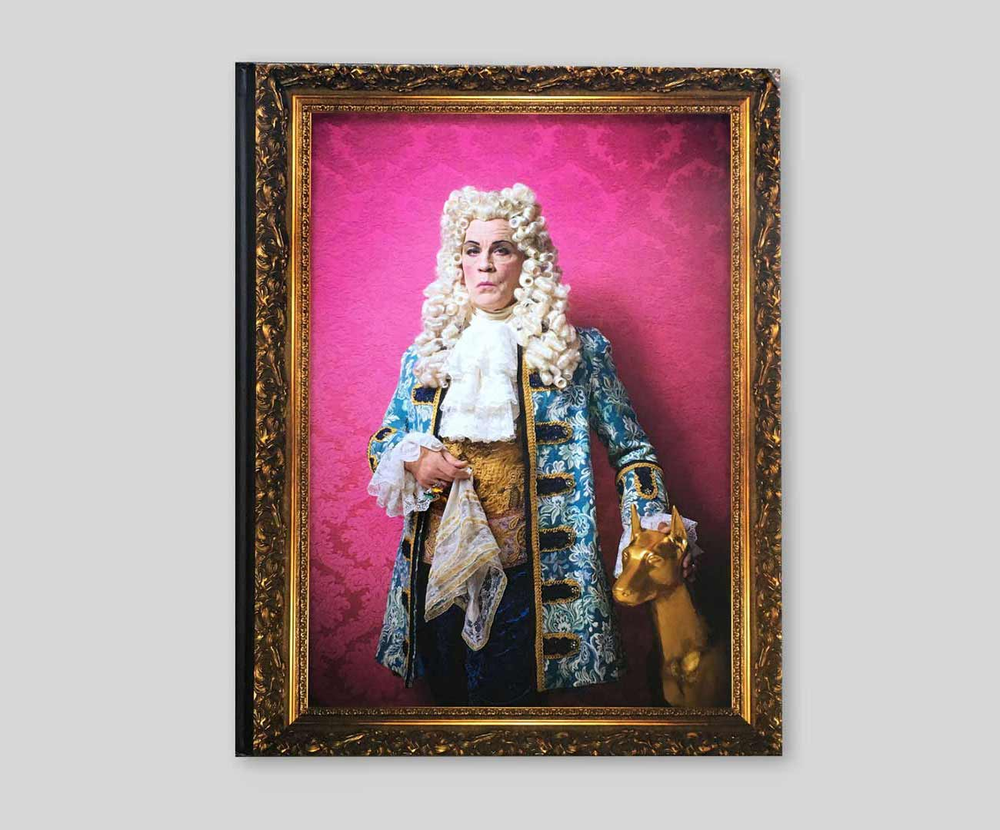
Love
Love Being John Malkovich!
Wartburg 353
The golden Wartburg 353 my parents bought and quickly sold in eighties Poland. Made in East Germany with three cylinders — I was sad they sold it so quickly.
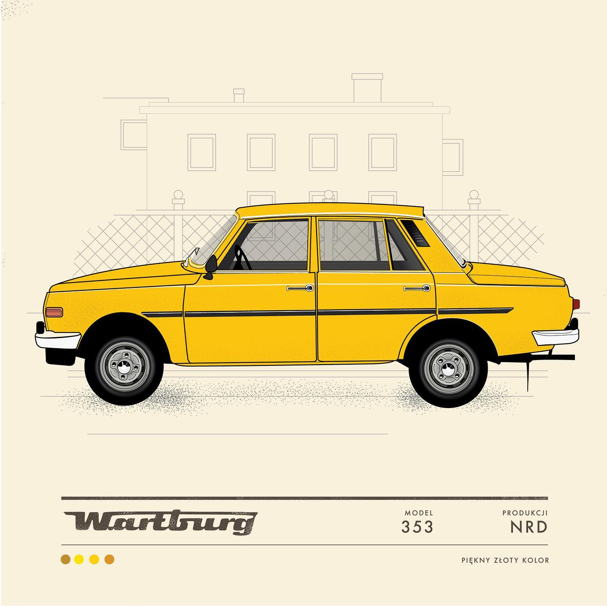
Love
Piękny złoty kolor.
The City of Highland Park
An exciting branding project for an entire city—from hanging street banners to signage, maps and brochures. The Highlander is a monthly city magazine. Completed while I was a lead designer at Samata LLC. Fun to see the actual pieces in use around the city.
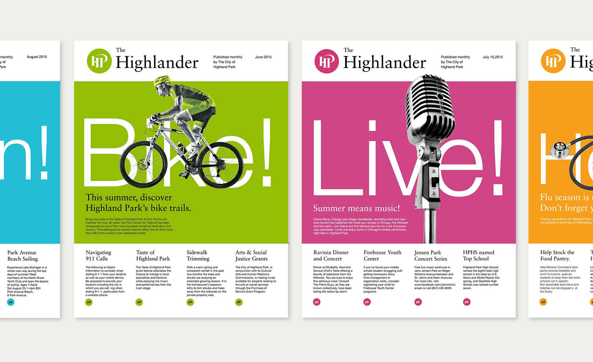
Love
We heart Highland Park!
TimeLine Theatre Posters
Collection of illustrations for posters at TimeLine Theatre company in Chicago, looking forward to re-starting the current season.
The car my family had in 80s Poland. As a kid, I was quite ashamed of having such an old car, but looking back, it had such beautiful lines and color.
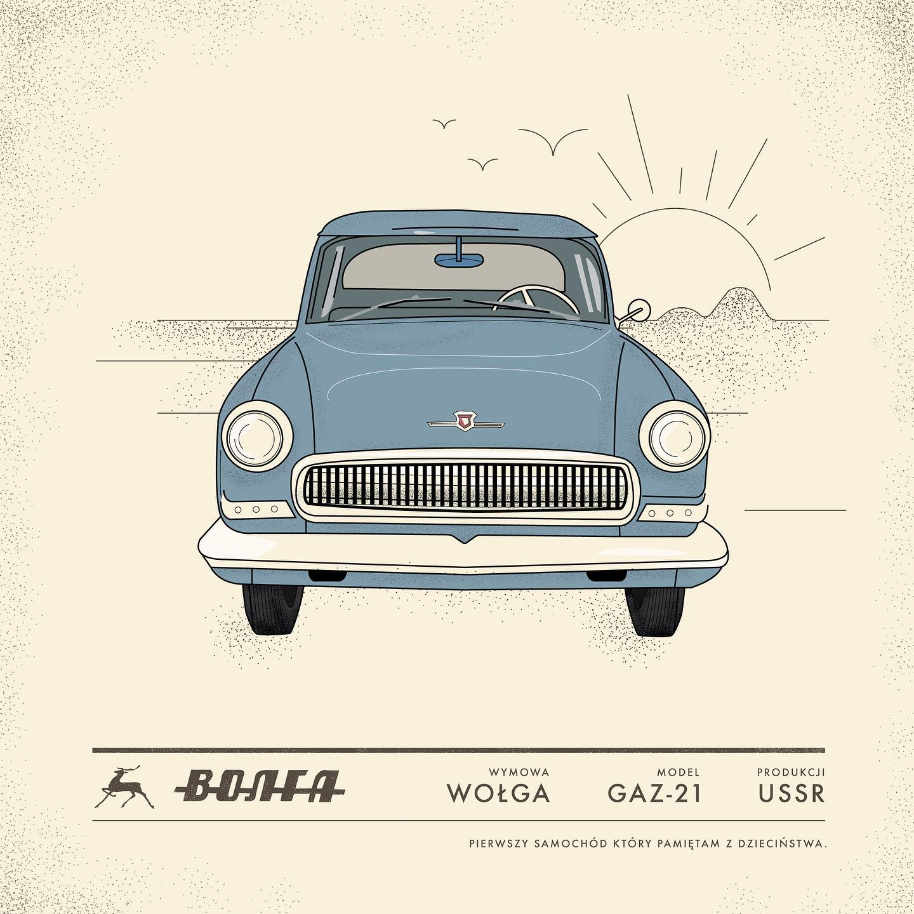
Love
80s Poland Love.
The Picture of Dorian Gray
Trailer for the animated film funded by a part-time faculty development grant from Columbia College Chicago. Music performed by HECQ. Premiered at the Philip K. Dick film festival in Los Angeles.
Love
Our century wants a new hedonism.
Guest Post
sustainable design
Love
A sustainable love
TimeLine Theatre
Illustrations and design for the iconic TimeLine Theatre in Chicago — seen here on the set of ABC News.
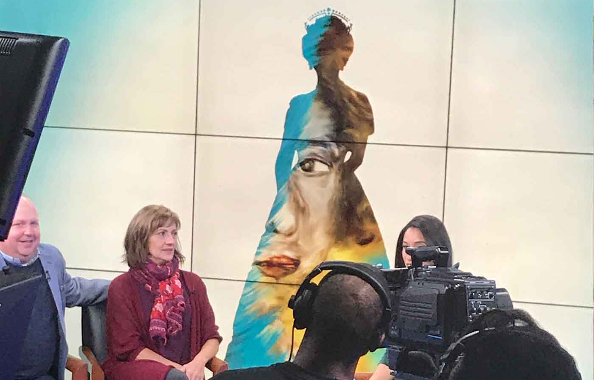
Love
Love is timeless.
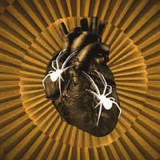
Matchsticks
Film title lettering designed by Alexander Skoirchet and art directed by Michal Janicki. Communication Arts Typography Competiton winner.
Love
You set our hearts on fire.
Guest Post
hola
Love
Hola, ¿cómo estás?
The Medieval People
An experimental documentary film based on excerpts from an interview with Lori Cannon, the legendary AIDS activist from Chicago. Premiered at Reeling: The Chicago LGBTQ+ Film Festival.
The final project for the UIC Advanced Digital Media class consists of an animated poster for a national park. We used these posters as a basis for a web campaign that links to all the websites created in the class. We used a grid developed for the National Park Service by Massimo Vignelli to allow for freedom of expression and consistency. His work never ceases to inspire me.
A paper typeface animation created with Alexander Skoirchet for a short film. We turned it into an installation at the Chicago Design Museum as part of the Unfolded exhibit.
The midterm for the class consists of organizing projects into a portfolio that is responsive and includes animation states. The coding is done live from a hand-drawn wireframe in order to start using the html language as a way of expression as well as a design tool.
Love
Love in HTML
TimeLine Theatre
Poster design for Kill Move Paradise by James Ijames, directed by Wardell Julius Clark. Striking photography by Joe Mazza is arranged with photography from civil rights history, creating a deconstructed American flag.
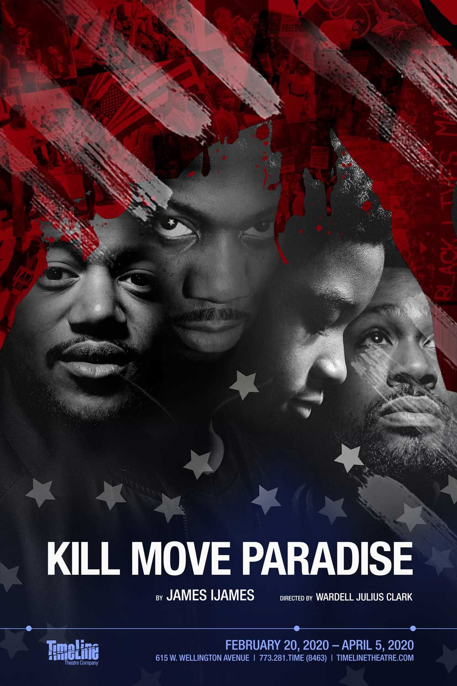
Love
Love is a growing up.
The Funkadelic F
Funkadelic collab with the fantabulous type designer Alexander Skoirchet 🕺
Love
Funky Love
TimeLine Theatre
Illustration and poster for Master Class at TimeLine Theatre. A portrait of Maria Callas takes over the whole format with fiery colors.
As a class we looked at the design principles as written by Dieter Rams. We discussed the difference between aesthetics and theory — is it possible to create using defined principles without simply copying the aesthetics? We re-made an existing project, and used the principles as content for a web-based responsive poster.
To learn about usability design, we coded a simple html and javascript based calculator. Before moving to the visuals, we focused on what are the parts that make it work. Where are buttons located and why? After getting it to work, we had an essential wireframe. We used it to add color, type, and roll-over states to understand how design can aid or interfere with how usable a tool is.
Poster designed for Alchemical Theatre in Wilmington, North Carolina. The play was held in protest of a discriminatory bill aimed at trans people introduced in the state government. Shakespeare provided a wonderful analogy to history that keeps on repeating itself.
Love
Love will win.
Sugar M
An M hand made of granulated and powdered sugar. Practice for a student assignment.
Love
Sweet love.
Frosting
3D type rendering practice for class: Frosting, extruded and rippling 😋
In the introduction to compositing class, we studied how we perceive depth in images, and how we can apply basic rules of two dimensional rendering to create an illustion of depth to composited imagery. From the passage of time to environmental noise, the technique of compositing can be understood by breaking images down into different depths.
An introduction to motion in our class centered on understanding time. The three objects in the gif below take the same amount of time to travel back and forth, but the timing of the frames is distributed unevenly in the bottom two. We looked at how to use the distribution of time to create an emotional repsonse in our viewers, from anticipation to joy.
Love
Love takes time.
Felipe
Modeling shots of my friend Nemiah Felipe Mitchell. We used color gels on the strobes to create a moody and unexpected eye-catching look for his portfolio.
Love
Eye-catching love.
TimeLine Theatre
Illustration and poster for Boy at TimeLine Theatre. Fractured color blocks make up a portrait of the main character, a person that creates their own identity.
Love
Transformative Love.
Willa Vodka
Brand identity and packaging for Willa Vodka designed with the team at Samata. One of the funnest part of the design process was attending vodka tastings with the distillers. Being Polish, I thought I had good prior knowledge on the subject, but I was surprised by the nuances of spirit making. The bottle was shown at the Chgo Dsgn at the Chicago Cultural Center.
Love
Finely crafted love.
Amita Health Branding
Noticed the logo we designed at Samata LLC for Amita Health coming up on a lot of buildings in the Chicago area. It looks great backlit.
In 1882 Paul Ree introduced his friend Nietzsche to a young Russian woman named Lou Salome. The three formed a plan to live together as a chaste trio dedicated to a life of the mind. Chaste at Trap Door Theatre is a play that shows what would have been if this plan came to fruition.
Love
Chaste love.
Be Magazine
An award-winning magazine developed as part of the brand identity for be.group, a senior living community, created at Samata LLC. We interviewed and photographed residents in the be.group communities. Their stories and energy are fascinating and make for a great read.
Love
Be love.
Cytrina Liqueur
Naming, logo and bottle design for Cytrina Liqueur created at Samata. A crisp and classic look for a crisp mixer.
Love
Love in a bottle.
The Woman Behind The Wall
Trailer for the independently created film shown at a fundraiser at the Empty Bottle, where we threw a concert to raise money and pay the actors and designers of the film. We exceeded our goals and were able to provide stipends to everyone involved.
Love
Love Noir.
Wild Onion Brewing Logo
Logo design for Chicagoland’s early craft brewing pioneers: a graphic re-interpretation of an onion. Glad to see this logo country-wide in different bars, pubs and liquor stores.
Poster design for Naked by Luigi Pirandello. A Picasso-inspired female figure painting is observed by a group of male characters. Their gaze, rather than discovering truth, is a projection of their own thoughts and desires.
Love
Naked truth of love.
Morningstar, Inc.
My first full time job out of school was at Morningstar, Inc. This amazing company shaped my skills in Chicago and London. One of my favorite pieces I worked on was bringing to life a series of displays that greeted people on each floor of the Chicago office. Together with the team, we connected each display to live data, both financial and wayfinding. We set up a control system and instructions so that other designers could create new pieces for the displays.
Love
Clear love.
Trupiak
Trailer for a short film co-produced and screened by Oracle Productions, a public access arts center in Chicago. Trupiak tells the story of an ominous school for Polish immigrants who are held captive and magically tranformed into anitque furniture.
Love
Transformative Love.
Magi
A visual study for a video interpretation of the biblical tale of the Magi – the three kings, or wise men – who traveled the world to give gifts to the newly born Jesus of Nazareth.
Love
Gifts of love.
Friedman + Huey
I am always so satisfied when graphic design can bring moments of delight to industries where people least expect it. This design for an accounting firm created while at Samata LLC did just that.
Love
Unexpected love.
Anyallerie Fine Jewellery
Amazing to see the Anyallerie logo design we created on their brand new flaship store in Bangkok.
Love
Crafted love.
More human than human
I took photos of Neo Nightclub patrons which were used for promotional posters designed by Johnny Mei, and serve as a time-capsule catalog of the visitors.
Love
Industrial strength love.
Matchsticks
Short excerpt from the film Matchsticks, which premiered at the AGLIFF film festival in Austin Texas, and was later part of the Moving Pictures exhibit at GAG Gallery. This part of the film pays tribute to the artist Felix Gonzalez-Torres.
Love
He existed in time.
Mort Couture
Collage series attempting to reclaim the visual realm of glamour from corporate control.
Poster and photography for a play based on the poetry of Wisława Szymborska, a Nobel Prize winner from Poland. Having read a lot of her work, the project was daunting, but the idea of migrants trying to levitate their suitcases seemed just right.
Love
Practical Love.
Lo Rez Brewery
Beer label design centering around the idea of different wood types representing the type of beer in the bottle. The darker the wood, the darker the beer.
Love
All shades of love.
Communication Arts
Morning light on the Communication Arts Award of Excellence that Alexander Skoirchet and I won for our typographic work on the Matchsticks film.
Love
Love is the best reward.
Jinx Titanic and the Ladykillers
Art direction and photography for an EP cover of the Chicago band Jinx Titanic and the Ladykillers.
Love
Love a good cigar.
The Woman Behind the Wall
Still from the film The Woman Behind the Wall. Shooting this film was a challenge, as it was done during two 24 hour days in front of a green screen on a hot summer with a broken air conditioner in the studio, but the result is a charming noir.
Poster and photography for John Doe by Stanisław Witkiewicz at Trap Door Theatre.
Love
Repressed truth even in lies.
Matchsticks
Still from the film Matchsticks. One of my favorive film festival experiences was during the premiere of this film at the aGLIFF festival in Austin, Texas.
Love
Love brightly
Impossible Objects Website
Impossible Objects is a 3D printing company that works with carbon fiber and fiberglass, revolutionizing the manufacturing process. While at Samata, we created a website that was inspired by nature, rather than the sleek and modern aesthetics of competitors. It was an amazing experience to work with a client that wanted to push the boundaries of how a website could look like and function.
Love
Love doing the impossible.
Eating Our Words
We manufactured candy hearts with six commonly used words seen in gay dating apps. These were given to Chicago bar patrons, asking each to eat the phrase they have used to describe themselves. The frequency of the phrases was recorded. In collaboration with Robert M. Kerr.
Love
Not love but tastes great.
Makulatura
Trailer for the short film Makulatura. A surrealist take on routine, creativity and authority.
Love
Love experiments.
Brian James Dickie
Brian is a staple in the Chicago music and film scene, from Metro and Smartbar to Neo Nightclub and many films and tv shows. I art directed and photographed him in a more relaxed pose rather than the sterotypical look that makes up a lot of his television and movie appearances.
Love
Love good tattoos.
Trupiak
Promotional still image from the short film Trupiak created using paper art made by Reina Takahashi.
Love
Paper art love.
Other Studio
Photography for an anniversary invitation for the fantastic Other Studio under the creative direction of the brilliant Eileen Tjan.
Love
Love the other.
The Woman Behind The Wall
Part animation, and part live action, The Woman Behind the Wall is a film shot entirely on green-screen. We raised funds for the actors and crew by hosing a concert at the Empty Bottle, and got to work with amazing DPs and editors to bring it together. It screened on two nights at Facets, Chicago.
Love
Love is stronger than walls.
Levitations
A decontextualized view of a pole dance performace by Joannie Wu of soFly Social in Austin, Texas.
Love
Decontextualized Love.
Dark Stars Poster
Poster for the play by Arthur Meek, performed by Jonathan Council. The play toured Australia and New Zealand.
Love
Love is remembering
Good50x70 Poster
A social communication project that included international public poster exhibitions and publications benefitting nonprofit organizations. Work was selected by an international jury including Massimo Vignelli and Alain Le Quernec. My selected poster focused on decriminalization of those living wtih HIV, and was utilized by Amnesty International.
Love
Love is not a crime
Harold & Bunnie
Created with Joannie Wu as a music video for a David Lynch song, the story follows the unraveling fantasies of Harold & Bunnie, as they become aware of the grim realities of their desires. We shot the film in the classic Heart O Chicago Motel with Johnny Mei.
Love
Fluffy love.
Morningstar Investment Konferenz
Book cover design for the Morninstar Investment Conference in Germany. The microphone icon used on Morningstar investment reports is used to center the theme of communication.
Love
Liebe ist Kommunikation
Trap Door Theatre
Poster for The Balcony by Jean Genet at Trap Door Theatre. See all the posters here.
Love
Love things as they really are.
Morningstar Direct
Design for a mousepad promoting the launch of Morningstar Direct, an investment software. The idea of forward movement is communicated with the use of a simple grid on a 45 degree angle. This was my first project while I worked at Morningstar, and still one of my favorites.
Love
Direct Love.
Tilt
Film title lettering by Johnny Mei. The short movie is about a stabbing, so the title letters take on an elegantly simplified knife shape.
Poster and photography for Vatzlav by Sławomir Mrożek at Trap Door Theatre.
Love
Art is a noble task.
Shotgun 2
A short film created with my friend Barry Branford. A short study on casual hook-ups in a big city, recontextualized to focus on the wonder, anticipation and adventure of seeking out brief connections with strangers.
Love
Love can be for right now.
Insult Clock
An alarm clock app concept conceived and created in one day with Jessi Adrignola and Jason Schifferer.
Love
Love to sleep in.
Studiobema
Designing for yourself can be hard, but coding that design can be harder still. This single-page iteration of my site is still one of my favorites. My friend Jason Schifferer helped me with a javascript that highlighted each section of the page as the user scrolled. The site was featured on Site Inspire along with a few other online showcases. I was happy when I saw the section-highlight script pop up on a few other pages across the web.
Love
Love yourself first.
Make Mistakes
Artwork produced for the AIGA Self Portraits book — a collection of advice from designers to their younger selves. My advice to myself continues to be “make more mistakes.”
Love
Love is not a mistake.
The New Jackson Hotel
A neo-noir film I created with my friends and colleagues. A fun experiment shot on one of the first SLR cameras with video capability. The film follows a detective who is searching for a missing woman who lived right next door to his apartment.
Love
Love thy neighbor.
Trap Door Theatre
Poster and photography for The Bitter Tears of Petra Von Kant at Trap Door Theatre. See more posters here.
A hand-crafted exercise I completed during my sophmore year of studies at UIC with professor Philip Burton. We painted the shapes, getting the balance just right, then cut them out at different scales and arranged as compositions. In the end, we added text to create a series of four covers. It was hard to understand at the time, but these studies have proven to be useful so many years later.